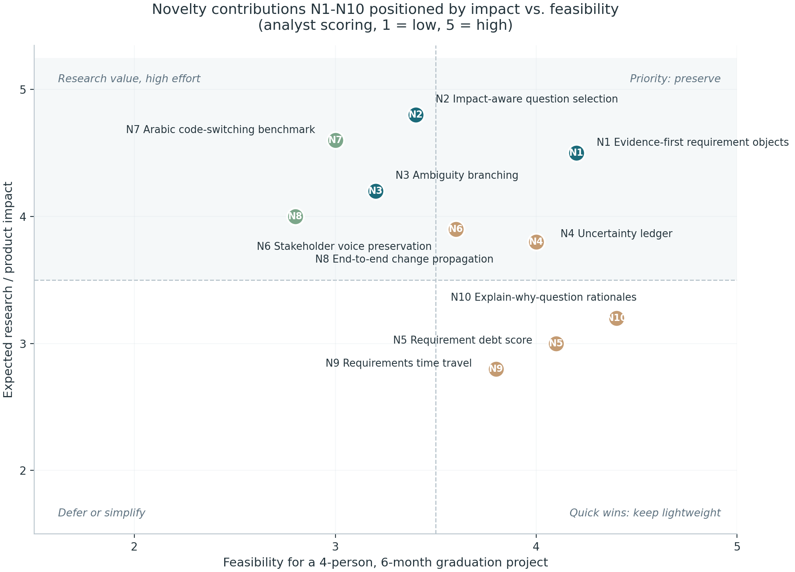

N2 Impact-aware question selection · N7 Arabic / code-switched benchmark — individually defensible, ablation-critical, independently publishable.
N1 Evidence-first objects · N3 Ambiguity branching · N4 Uncertainty ledger · N5 Requirement debt score · N6 Voice preservation · N10 Rationale explanations — valuable engineering, not headline research.
N8 Cross-artifact change propagation · N9 Requirements time travel — Phase B material; first cuts when time compresses.
Scores are analyst estimates on a 1–5 scale; the matrix is self-assessed by the team, hence Action 2 (systematic search protocol).